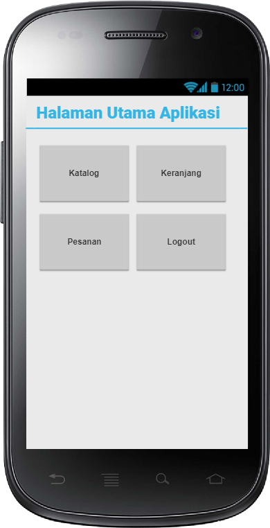

Nama : Gerry
NIM : 1811500101
Kelompok : TI6A
Hasil saya menyadur pertemuan ke-5 :
1.untuk usecase biasanya masing" usecase biasanya di wakili oleh 1 halaman kecuali logout.
biasanya ditambah 1 yaitu halaman utama
Rancangan Layar Pencil
File Word


